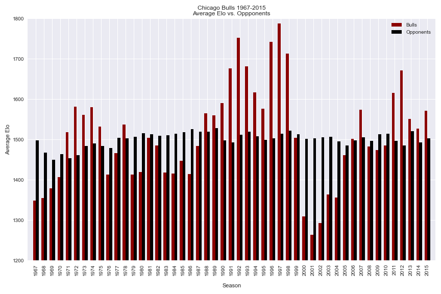

The side-by-side bar chart above depicts a comparison of season-averaged historical Elo ratings1 for Bulls teams vs. their opponents in a given season.
Essentially, the Elo rating indicates a team's relative skill level or overall power ranking in a zero-sum system. According to the data source, the historical average Elo rating for an NBA team is around 1500, which is a trend that is confirmed in the chart above (opponents' bar heights tend to cluster around this level).
Again unsurprisingly, the Bulls historical Elo ratings were the highest during the early 1990s during the early "Jordan Era", and reached their (at the time record-setting) peak level in 1996 when the team established a new league high for regular season wins.
The team then saw a period of historically poor Elo ratings in the early 2000s during what can only be considered a franchise "rebuilding period" at best.
1 Source.